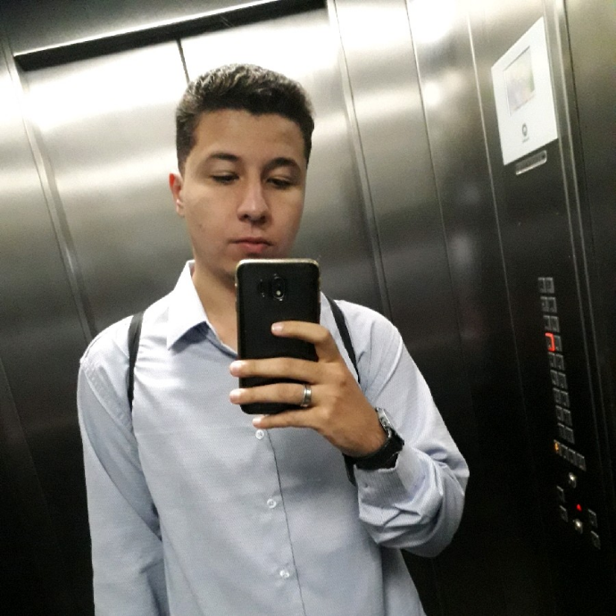

Arthur Santos Almeida™

Estagiário Desenvolvedor Web | Multiedro
São Paulo, São Paulo, Brasil
Resumo
Atuando na área de TI há mais de 2 anos,
cursando Bacharelado
em Ciência da Computação pela UNINOVE,
atualmente estou
trabalhando como Estagiário Desenvolvedor Web
Experiência
- Multiedro
- Estagiário Desenvolvedor Web
junho de 2019 - Present
São Paulo e Região, Brasil
- IT Commerce
- Analista de HelpDesk
junho de 2018 - fevereiro de 2019 (9 meses)
São Paulo e Região, Brasil
Atendimento ao usuário esclarecendo dúvidas e resolvendo demandas
conforme necessidade e
escopos pré-definidos.
Atendimento telefônico e suporte técnico via acesso
remoto ou presencial.
Configuração de TCP/IP em máquinas/impressoras
e etiquetadoras. Criar, alterar, excluir e adicionar permissão de usuário nos
sistemas.
- Prevent Senior
- Jovem Aprendiz de Suporte TI
abril de 2017 - junho de 2018 (1 ano 3 meses)
Manutenção e remanejamento de equipamentos e periféricos de TI.
Manutenção e crimpagem de Patch Cord RJ45 e KeyStone. Formatar, instalar
e configurar Desktops/Notebooks. Validação de ponto de rede no Switch
Formação acadêmica
UNINOVE
Bacharelado ciência da computação, Ciência da Computação · (2016 - 2020)
Contatar
(11)96640-2850 (Mobile)
santosalmeida.arthur@gmail.com
LinkedIn
euarthur.000webhostapp.com
Principais competências
Sistemas operacionais
Suporte técnico
Java
Languages
Português (Native or Bilingual)
Inglês (Professional Working)
Espanhol (Limited Working)
Certifications
{kind=link}
{kind=link}
{kind=link}
{kind=link}
{kind=link}